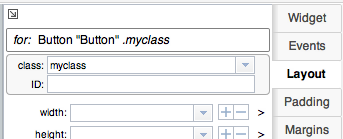
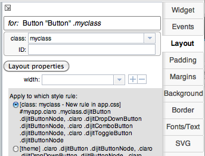

Open menu
 |
Open menu commands:
The Orion Navigator command brings up the Eclipse Orion technology in a new browser tab, where you can use the Eclipse Orion source development tools on the files in your Maqetta workspace. Orion is a powerful cloud-based IDE. |
File tabs
Listing of all currently open files.
Asterisk indicates that the file is "dirty" (i.e., changed since most recent save operation).
When you open CSS or JavaScript files, Maqetta opens a source editor that takes up the full center region of the application.
Asterisk indicates that the file is "dirty" (i.e., changed since most recent save operation).
When you open CSS or JavaScript files, Maqetta opens a source editor that takes up the full center region of the application.
View controls
These controls allow you to switch between the four viewing modes:
The button for the currently active mode will show a "pressed" look.
You can switch to Design or Source by clicking on the corresponding button. To switch to one of the split modes, use the drop-down menu. Note that if you switch to a split mode, the second button's text will change to reflect the most recent source viewing mode (i.e., Source vs Split-H vs Split-V).
In split view, changes in the design page are immediately reflected in the source pane, and vice versa.
- Design - (The default) Only show the visual editor
- Source - Only show the source editor
- Split vertical - Show design and source view simultaneously, with design on the left and source on the right.
- Split horizontal - Show design and source view simultaneously, with design on the top and source on the bottom.
The button for the currently active mode will show a "pressed" look.
You can switch to Design or Source by clicking on the corresponding button. To switch to one of the split modes, use the drop-down menu. Note that if you switch to a split mode, the second button's text will change to reflect the most recent source viewing mode (i.e., Source vs Split-H vs Split-V).
In split view, changes in the design page are immediately reflected in the source pane, and vice versa.
Files palette
|
Files shows your file system in the cloud (see image at right).
The Files palette toolbar includes commands for creating and managing projects,
creating and managing project templates, downloading files and uploading files. Take special notices of two files that are automatically included in user workspaces, app.css and app.js. Notes on these two files:
|
 |
Visual design canvas
In split view, changes made to the design pane are immediately
reflect in the source pane, and vice versa.
Selecting a widget in the design pane will usually highlight the corresponding source code in the source pane, and vice versa.
Selecting a widget in the design pane will usually highlight the corresponding source code in the source pane, and vice versa.
Source editing pane
In the source pane, you can view and hand-edit your HTML source code.
Warning: Be careful with your source editing changes. Maqetta can only successfully parse HTML files that are structured in the same manner as the HTML files that Maqetta creates.
Warning: Be careful with your source editing changes. Maqetta can only successfully parse HTML files that are structured in the same manner as the HTML files that Maqetta creates.
Properties palettes
|   |
The various Properties palettes are where you can change
widget-specific property values. By default, changes to CSS properties are attached to element.style (i.e., on the 'style' attribute) on a widget's root element. To split off CSS property definitions into external CSS stylesheets, here are two options:
|